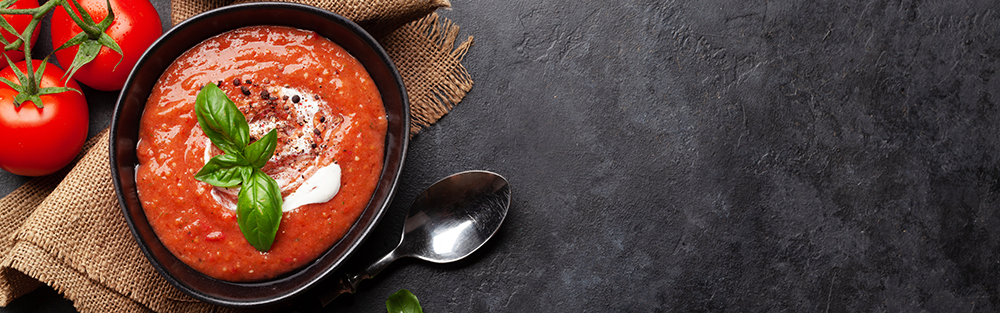

TOMATO SOUP
Back to Home

This tomato soup recipe is simple, quick, and perfect to make when
tomatoes are ripe in gardens and farmers' markets for a delicious
summertime treat. Delicious with garlic bread or a grilled cheese
sandwich.
One spoonful of tomato soup has the power to automatically transport you
back to your childhood. The tasty soup is the ultimate comfort food,
especially when it's homemade.
This tomato soup recipe uses fresh tomatoes and will remind you of your
mom's famous cooking. Sure the can of tomato soup works in a time crunch,
but nothing beats the delicious flavors of a soup you made from scratch
with fresh ingredients. So say goodbye to canned soup forever and hello to
your new favorite tomato soup recipe.
Ingredients:
-
Tomatoes: This recipes starts with fresh tomatoes for
good reason. It makes the best tomato soup.
-
Chicken broth: Using broth will help make this more of
a soup and less like a sauce.
-
Garlic: The recipe calls for about four cloves, but
feel free to use however much your heart desires.
-
Onion: A yellow or white onion would be ideal for this
soup.
-
Butter: Use butter to make a roux, a thickening agent
made from flour and fat.
- Flour: Use all-purpose flour to make your roux.
-
Sugar and Salt: Add these two
seasonings until the soup suites your tastebuds.
How to Make Tomato Soup
- Boil the tomatoes, onion, garlic, and broth.
- Run the mixture through a food mill into a large bowl.
- Make a roux.
- Add the tomato mixture and season.